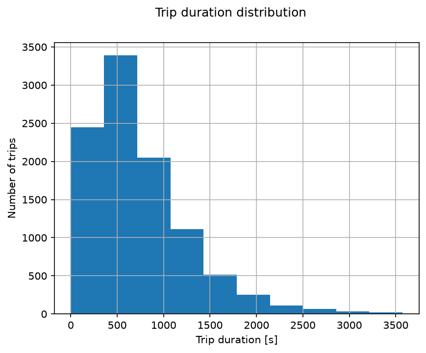
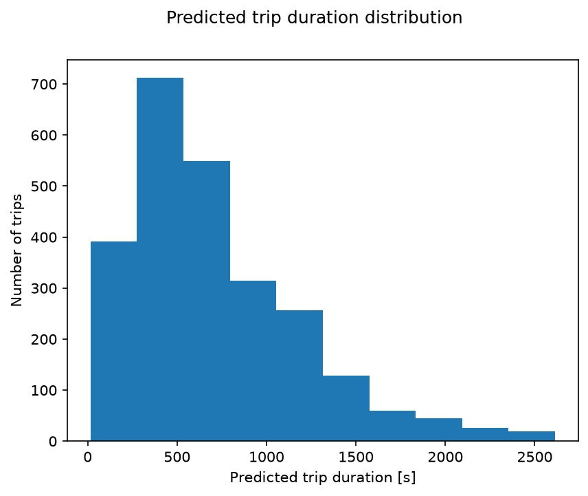

Predicting how long a taxi trip in New York City will take, using automated feature engineering (Featuretools) combined with Gradient Boosting, staged across three feature sets to measure how much each addition actually helps.
Predicting how long a trip will take is a common real-world problem in logistics, ride-sharing, and delivery. This project uses a dataset of 10,000 NYC taxi trips (pickup/dropoff timestamps, coordinates, neighborhoods, distance, passenger count) to test how much feature engineering, done automatically rather than by hand, can improve prediction accuracy.
Trip duration is right-skewed: most trips take under 1,000 seconds (about 16 minutes), with a small tail of longer trips.

Across the three feature-engineering stages, R² went from 0.757 (basic trip attributes plus a simple weekend flag) to 0.808 (adding minute/hour/day/week/month features) to 0.799 (adding neighborhood-level aggregations on top). Interestingly, the richest feature set didn't perform best — the extra aggregation features added complexity without a clear payoff, a useful reminder that automated feature engineering doesn't guarantee improvement past a certain point.
The final model's predicted duration distribution closely mirrors the real one, and trip_distance dominates feature importance by far (0.867), followed by dropoff location and pickup hour, matching intuition: distance drives duration, location affects route/congestion, and hour affects traffic.

Predicted trip durations on the test set, closely tracking the shape of the real distribution above.